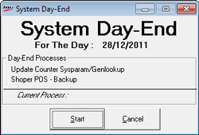

The CLOSE Day or Day-End process is usually executed at the end of the day to close the day’s transactions. This operation updates the summary, checks for any consistency problems, synchronises the data with HO (if applicable) and takes a database backup.
Caution: When you perform a CLOSE Day operation, ensure that no user is in the process of executing any transaction. No transactions are allowed once the day is closed.
In case an accidental CLOSE Day is performed, then the system status has to be reset by using the Re-open the day option (under supervisory options).
How to reach: Housekeeping > CLOSE Day
The System Day-End window for the standalone Shoper 9 POS is as shown.

Click here to view the System Day-End window for the Shoper 9 POS which communicates with HO.